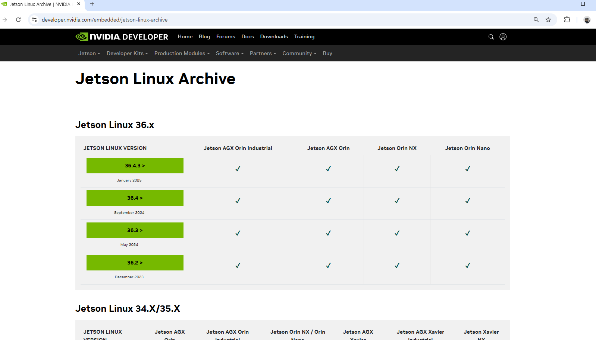
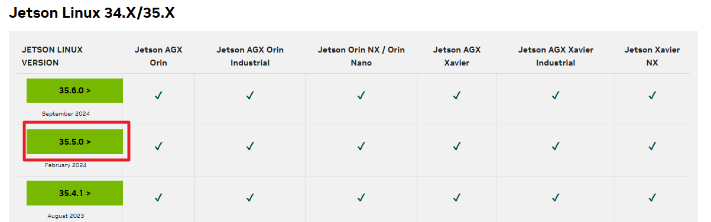
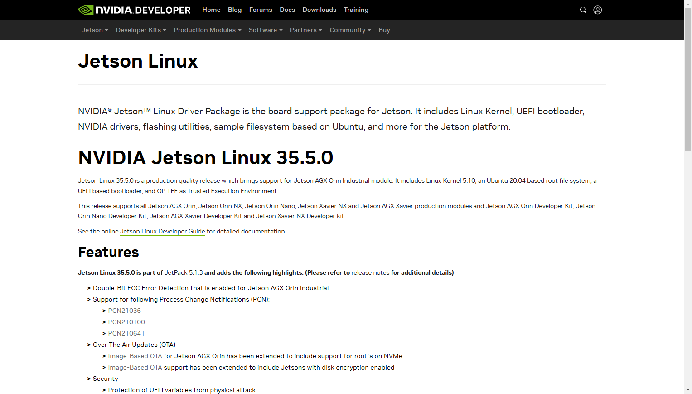
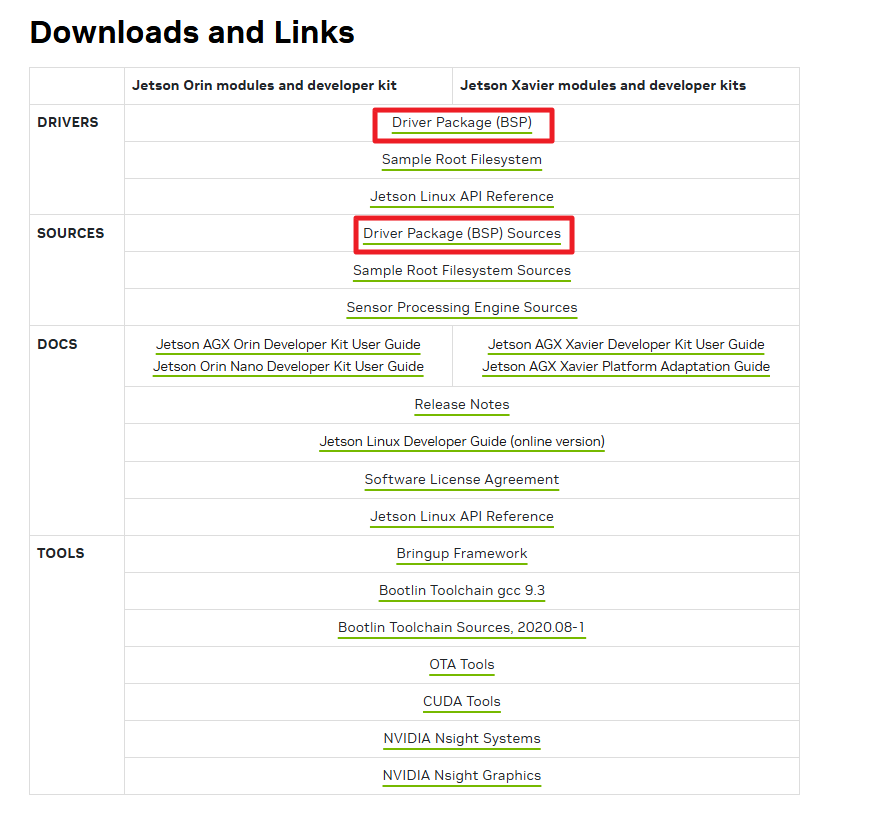
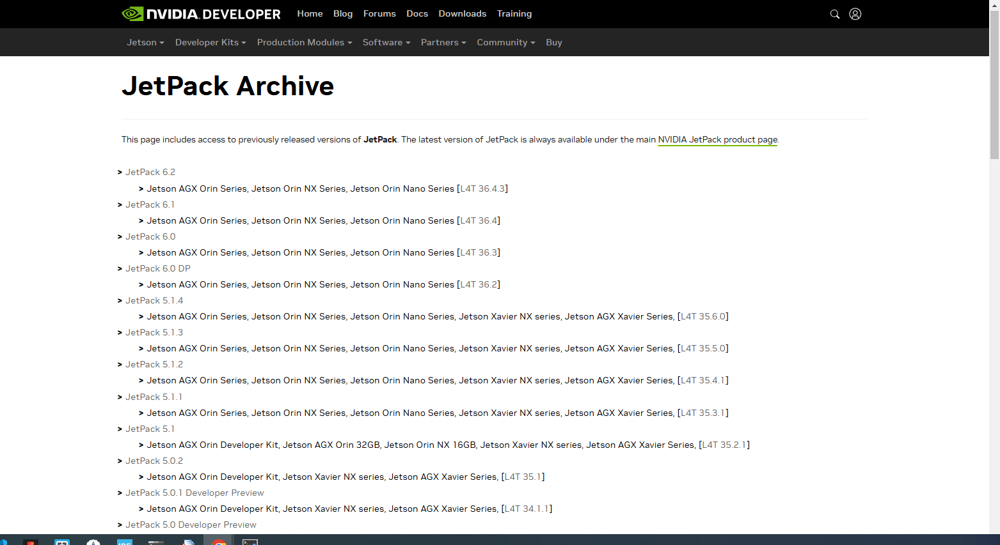
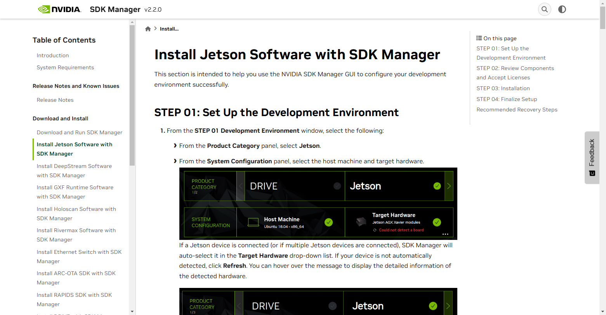
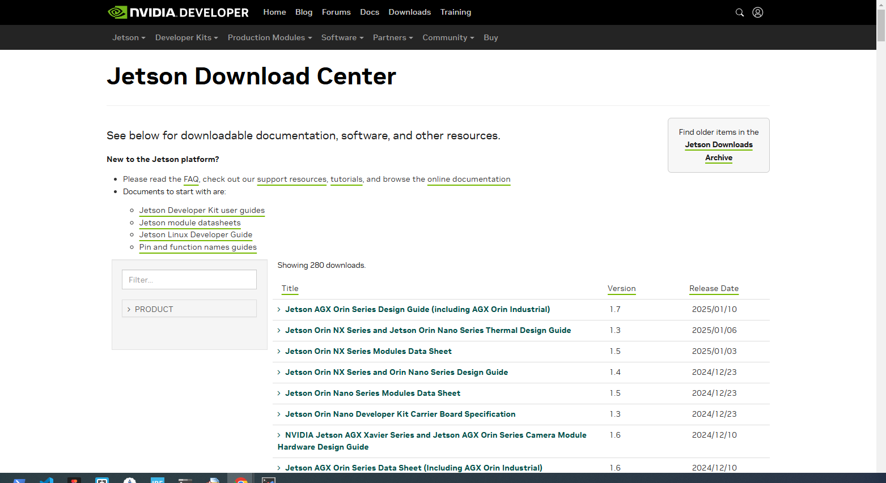

패키지 다운로드
1. 커널 소스 다운로드
Jetson Orin Nano의 커널 소스는 NVIDIA의 JetPack SDK를 통해 제공됩니다. JetPack은 NVIDIA의 SDK Manager를 통해 설치할 수 있습니다. JetPack에는 부트로더가 포함된 Jetson Linux, Linux 커널, Ubuntu 데스크탑 환경 및 GPU 컴퓨팅, 멀티미디어, 그래픽 및 컴퓨터 비전의 가속화를 위한 완전한 라이브러리 세트가 포함되어 있습니다. VELOG
JetPack을 설치하려면 NVIDIA의 SDK Manager를 사용해야 합니다. SDK Manager는 NVIDIA의 개발자 웹사이트에서 다운로드할 수 있습니다. 설치 후, SDK Manager를 실행하고 Jetson Orin Nano 보드를 선택한 다음, JetPack을 설치하면 커널 소스도 함께 설치됩니다.
여기서 다운로드 받는다.
다운로드 사이트 : 커널 & SDK
🚀 다운로드 링크 : https://developer.nvidia.com/embedded/jetson-linux-archive

버젼 선택

지정된 사이트로 이동


다운로드 된 파일 설치방법
1) Jetson Linux 해당 버전의 소스 파일 다운로드:
사용 중인 Jetson Linux 버전에 맞는 소스 파일을 찾아 다운로드합니다.
2) 압축 해제:
다운로드한 .tbz2 파일을 다음 명령어로 압축 해제합니다.
tar xfv public_sources.tbz2
3) 커널 및 NVIDIA 외부(out-of-tree) 모듈 소스 파일 압축 해제:
아래 명령어를 실행하여 커널과 관련 모듈 소스를 추출합니다.
cd ~/ksrc/Linux_for_Tegra/source
tar xf kernel_src.tbz2
tar xf kernel_oot_modules_src.tbz2
tar xf nvidia_kernel_display_driver_source.tbz2
이 과정을 거치면 kernel/ 하위 디렉터리에 커널 소스가 추출되며, NVIDIA 외부 커널 모듈 소스는 현재 디렉터리에 압축 해제됩니다.
2. jetPack 다운로드
JetPack에는 부트로더, Linux 커널, Ubuntu 데스크톱 환경을 포함한 Jetson Linux와 GPU 컴퓨팅, 멀티미디어, 그래픽, 컴퓨터 비전 가속을 위한 완전한 라이브러리 세트가 포함되어 있습니다. 또한, 샘플 코드, 문서, 개발자 도구를 호스트 컴퓨터와 개발자 키트 모두에서 사용할 수 있도록 제공하며, DeepStream(스트리밍 비디오 분석), Isaac(로봇 공학), Riva(대화형 AI)와 같은 고수준 SDK를 지원합니다.
SDK Manager 다운로드 사이트는 다음과 같다.
🚀 Jetpack Archive : https://developer.nvidia.com/embedded/jetpack-archive

3. SDK Manager 사용
SDK 설치 및 사용법에 관한 내용을 설명하는 사이트는 다음과 같다.
🚀 SDK Manager : https://docs.nvidia.com/sdk-manager/install-with-sdkm-jetson/index.html

nano@leno:~/nsdk$ ls
Jetson_Linux_R35.5.0_aarch64.tbz2
nano@leno:~/nsdk$ tar xvf Jetson_Linux_R35.5.0_aarch64.tbz2
nano@leno:~/nsdk$ ls
Jetson_Linux_R35.5.0_aarch64.tbz2 Linux_for_Tegra
4. 크로스 컴파일러 다운로드
1) 사이트에서 파일을 다운로드 한다.
Bootlin Toolchain gcc 9.3
파일이름: aarch64--glibc--stable-final.tar.gz
파일 설치:
nano@leno:~/l4t-gcc$ tar xvf aarch64--glibc--stable-final.tar.gz
nano@leno:~/l4t-gcc$ ls
aarch64-buildroot-linux-gnu aarch64--glibc--stable-final.tar.gz bin etc include lib lib64 libexec relocate-sdk.sh share usr
nano@leno:~/l4t-gcc$
4. 기술문서 다운로드
관련 기술문서를 다운로드 할 수 있다.
